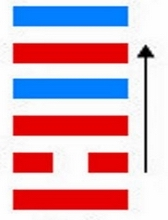
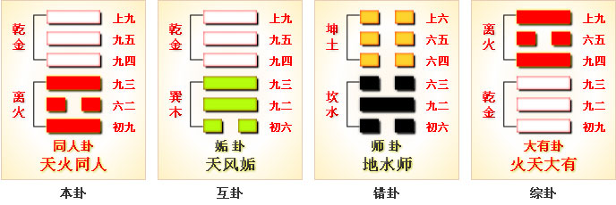
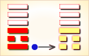
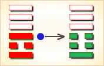
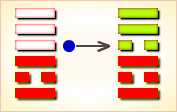
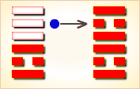
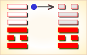

同人卦，阐释和同的原则。
此卦的主要精神是首先应当破除一家、一族的私见，重视大同，不计较小异， 本着大公无私的精神，以道义为基础，于异中求同，积极的广泛与人和同，才能实现大同世界的理想。
正义必然使邪恶屈服，但障碍必须果敢的排除。
同人的意思是会同他人。5:7是同人卦的代号，表示其主卦是5卦离卦，客卦是7卦乾卦。
离卦的卦象是火，特性是光明而依附，阳数是5；乾卦的卦象是天，特性是强健，阳数是7。
主方在积极主动地行动的时候，由于本身素质不佳，不得不会同他人，取得他人支持和帮助。
图中，红色表示当位的爻，天蓝色表示不当位的爻，箭头表示有应。
起卦前需要客观地、全面地、准确地分析主方和客方情况，必须至少符合下列条件之一，此卦才有参考价值：
5，客方阳数是7。切勿用任何随机数方式起卦，否则此卦不能用作决策工具。
图中，主卦的三条爻全是红色，表明主方当前的状态是正常的。 积极主动是正常的，主方应当积极谋求和扩大自己的利益，无可非议； 素质不佳是现实，缺乏经验可以逐渐积累，资金不足可以设法筹措，健康不佳可以加强锻练、补养或治疗，这些都是现实；态度强硬也是正常的，主方需要保护和获取利益，应当有坚定而明朗的态度。问题来自客方，客卦中有两条爻不当位，以天蓝色表示。
客卦下爻不当位，这是阳爻，表示客方行动也是积极主动，客方可能阻扰主方谋求利益，与主方有矛盾。 客卦上爻也是天蓝色，阳爻，不当位，表明客方态度强硬，可能与态度强硬的主方互不相让，发生争执。 而且，客卦上爻是对中爻的补充，上爻与中爻都是阳，表明客方素质非常好， 比如说，实力非常强大，由此，主方必须慎重地处理与客方的矛盾。只有处理好与客方的矛盾，主方才可能从客方的良好素质获益。
同人卦的卦爻辞指出在当前形势下，主方应当与他人联合， “同人于门”、“同人于宗”、“同人”“大师克相遇”以及“同人于郊”； 与他人联合的时候要有耐心，“三岁不兴”；还要留给他人空间，“乘其墉，弗克攻”。
与他人在门前会同，
不要仅仅会同宗派内的人。
部队埋伏于丛林中，
登上高处，等待三年不进攻，
登上了城墙而不占领它，
会同他人，先是痛哭，而后嘻笑；
克服了敌方抵抗，与他人大军会师。
会同他人于郊野。
卦辞则强调建立广泛的联合，“同人于野”，这样就“利涉大川”。下面逐条说明卦爻辞。
同人：同人于野，亨。
野：野外，郊野，代表广阔。
解释：君子具有广阔的胸怀，
这样是非常好的。利涉大川，利君子贞。
利：利于。涉大川：做大事。
解释：这样是有利于做大事的，也是最利于君子的。
《彖》曰：同人柔得位，得中而应乎乾，曰同人。
柔：顺意。中：中正。
解释：因为能够与大家的意思相符而顺意，
并且六二得中位，阴在阴爻，顺应，所以叫做同人。
同人曰：同人于野，亨，利涉大川，乾行也。
野：野外，郊野，代表广阔。利：利于。涉大川：做大事。
解释：君子具有广阔的胸怀，这样是非常好的。
这样是有利于做大事的，也是最利于君子的。
文明以健，中正而应，君子正也。
明：日月为离卦。健：指乾卦。
解释：这是君子走入正道。唯君子为能通天下之志。
唯：只有。志：志向。
解释：也只有君子才有办法与天下有共同志向的人谈功。
《象》曰：天与火，同人。君子以类族辩物。
类：列为。族：聚族。辩：分辨。
解释：这个就是天火同人卦。
也只有君子能够分辨事物而同其岗，就不会互相干扰。
初九，同人于门，无咎。
【白话】初九，
一出门便能与人和睦相处，不会有什么灾祸。
《象》曰：出门同人，又谁咎也！
【白话】《象辞》说：
一出门便能与人和睦相处，又有谁会来危害你呢？
六二，同人于宗，吝。
【白话】六二，
只和本宗本派的人和睦相处，必然会惹来一些麻烦。
《象》曰：“同人于宗”，吝道也。
【白话】《象辞》说“只和本宗本派的人和睦相处”，
不能团结各个阶层的人，这是引起麻烦的根源。
九三，伏戎于莽，升其高陵，三岁不兴。
【白话】九三，把军队埋伏在密林草莽之中，
占据附近的制高点频频瞭望，三年都不敢出兵打仗。
《象》曰：
“伏戎于莽”，敌刚也；“三岁不兴”，安行也？
【白话】《象辞》说：“埋伏军队在密林草莽中”，
说明敌人力量强大，我方力量弱小，只能潜伏下来。
“三年都不敢兴兵打仗”，
表明敌我力量相差悬殊，怎么敢冒险轻进呢？
九四，乘其墉，弗克攻，吉。
【白话】九四，准备登城向敌人进攻，
但终于没有进攻，是吉祥的。
《象》曰：
“乘其墉”，义弗克也，其“吉”，则困而反则也。
【白话】《象辞》说：
“准备登城向敌人进攻”，但终于没有进攻，
是因为发现这种进攻是不仁义的，这样做能获得吉祥，
是因为在困惑时能及时醒悟，
反过来能按正确的办法行事。
九五，同人，先号啕，而后笑，大师克相遇。
【白话】九五，与人和睦相处，
开始大声痛哭，后来破涕为笑，
大军作战告捷，志同道合者相会在一起。
《象》曰：同人之先，以中直也；
大师相遇，天罔极上遇，言相克也。
【白话】《象辞》说：
与人和睦相处，开始大声痛哭，
说明这时内心中正诚信，
因不知战事的胜败而焦急痛哭；
大军遇到了志同道合者，
终于获得了战争的胜利，于是欢笑起来。
上九，同人于郊，无悔。
【白话】上九，在荒郊也愿与人和睦相处，
未遇到志同道合者，也不后悔。
《象》曰：“同人于郊”，志未得也。
【白话】《象辞》说：
“在荒郊也愿与人和睦相处，未遇到志同道合者”，
说明此时团结众人，而希望天下大同的愿望没有实现。
“初九”是“同人”开始的一爻，刚毅，
在下方的位置，与“九四”同性相斥，不相应；
但也象征中间没有私情存在，
与人交往的公正与广阔；
所以说，是在门外与人交往。
〖原文〗同人于野，亨，利涉大川，利君子贞。
〖译文〗与他人在野外会同，顺利，
有利于涉越大江大河，有利于君子坚持。
〖解说〗同人卦的主卦是离卦，离卦的卦象是火；
客卦是乾卦，卦象是天，火光冲天，
照亮四方，象征对主方有利的形势。
离卦特点是光明而依附，依附于可燃物和氧气，
其中心暗淡而温度较低，表明主方素质不佳，
主方依附于客方的良好素质，以维持燃烧和发射光亮。
火焰总是往上的，表明主方积极主动的热烈追求，
这追求像是熊熊燃烧的火焰。
然而，主方需要客方帮助，
需要与客方联合，所以“同人于野”。
“同人于野”是“亨，利涉大川，利君子贞”的前提，
由于主方素质不佳，如果不与周围的人结合一起，
就不一定“亨”，不一定“利涉大川”，
不一定“利君子贞”。
〖原文〗同人于门，无咎。
〖译文〗与他人在门前会同，无所怪罪。
〖解说〗这是第一爻爻辞，
阳，主方积极主动地谋取和扩大自己的利益，
比如说，创新、创业、投资、进攻、求职、示爱，等等。
主方采取主动行动是应当的，但是，
由于客方强大，行动不容易，尽力而为，无所怪罪。
〖结构分析〗第一爻位置是阳位，
这条爻是阳爻，阳爻在阳位，当位，不过与四阳不有应。
当位表明主方积极主动是正确的，
只有积极主动，才能获取和扩大自己的利益，应当坚持下去。
主方由于素质不佳，积极主动地与他人联系，
争取获得帮助，不应当受到怪罪，“无咎”。
不有应表明在行动上，与客方不和谐，有矛盾，
主方应当注意妥善处理与客方的矛盾。
〖原文〗同人于宗，吝。
〖译文〗在宗派内会同他人，吝啬。
〖解说〗这是第二爻爻辞，阴，表示主方素质差。
主方的素质差，应当联系更广泛的人，
争取得到更广泛的支持和帮助，
如果只联系宗派内的人，就很不够了，显得吝啬。
〖结构分析〗第二爻位置是阴位，
这条爻是阴爻，阴爻在阴位，当位，又与五阳有应。
当位表明主方素质不佳是现实，是正常的；
有应表明素质不佳的主方有可能从客方得到补益，
是对主方有利的因素。
然而，如何才能利用这个有利因素，
则取决于如何妥善处理与客方的矛盾，
要能够广泛联系他人，包括联系客方。
如果只联系宗派，则不容易得到客方帮助，
“同人于宗，吝”。
〖原文〗伏戎于莽，升其高陵，三岁不兴。
〖译文〗部队埋伏于丛林中，
登上高处，三年不能兴起。
〖解说〗这是第三爻爻辞，
阳，表示主方态度强硬。
主方的强硬态度是对的，不过要耐心等待时机，
“三岁不兴”，不可过于急躁。
〖结构分析〗第三爻位置是阳位，
这条爻是阳爻，阳爻在阳位，
当位，不过与六阳不有应。
当位表明主方的强硬态度是正确的，持坚定而明朗的态度，
便于寻取和维护自己的利益，“伏戎于莽，升其高陵”；
不有应表明主方的强硬态度与客方的强硬态度有冲突，
主方需要有耐心，避免冲突，“三岁不兴”。
〖原文〗乘其墉，弗克攻，吉。
〖译文〗登上了城墙，不占领它，吉利。
〖解说〗这是第四爻爻辞，
阳，表示客方积极主动地谋取和扩大自己的利益，
比如说，创新、创业、投资、进攻、求职、示爱，等等。
辞义是，主方登上了城墙，不占领它，对主方吉利。
客方素质良好，力量强大，
当客方积极主动行动的时候，
主方登上了城墙，
不过，主方很难守住，
主方留下城墙让客方去占领，
给客方留下胜利机会，
以便于保持与客方的联盟，
“乘其墉”而“弗克攻”，对主方才吉利。
如果不这样，就可能与客方有冲突，就不一定吉利。
这里，战斗只是比喻，
说主方在发展自己并取得实际利益的时候，
应当给积极主动的客方留下发展空间。
〖结构分析〗第四爻位置是阴位，这条爻是阳爻，
阳爻在阳位，不当位，并且和一阳不有应。
不当位，
表明客方的积极主动行为是对主方不利的潜在因素；
不有应表明这种对主方不利的潜在因素，
成了真正的对主方不利的因素，客方与主方有矛盾。
主方积极主动，“乘其墉”，由于存在这不利因素，
主方“弗克攻”，这样，
主方就可能避免与客方冲突，就吉利，“吉”。
不然，如果主方既“乘其墉”，又“克攻”，
则可能与客方冲突，而客方的实力远强于主方，
对主方将不“吉”。
〖原文〗同人，先号啕，而后笑；大师克相遇。
〖译文〗会同他人，先是痛哭，而后嘻笑；
与他人会同的大军在克服了敌方的抵抗后会师。
〖解说〗这是第五爻爻辞，
阳，表示客方素质良好。
这里的同人指与客方结合。
由于客方素质良好，主方素质不佳，
开始时，客方不与主方联合，
主方行动很困难，“先号啕”；
而后，客方与主方联合了，“而后笑”。
“大师”指主客双方联合在一起的力量，
“克”的对象是主客双方共同的敌人。
这里的“师”是比喻，是指主客双方的联盟，
例如商业联盟，外交联盟，
朋友之间的结盟，等等，不宜狭义地解读为作战部队。
〖结构分析〗第五爻位置是阳位，这条爻是阳爻，
阳爻在阳位，当位，又与二阴有应。
当位表明客方素质良好，
这是对主方有利的潜在因素，
这良好的素质可能让主方受益；
有应表明这对主方有利的潜在因素，
真正成了对主方有利的因素，
主方素质不佳，可能得到客方帮助。
这里的有应是一种阴阳和谐状态，
这和谐状态是以主方为阴，
客方为阳，主方需要客方的帮助，
而正好客方可以满足主方的需要。
对于客方来说，对于阳的方面来说，
这种和谐不一定有利，
客方需要用自己的良好素质帮助主方，
可能客方有损失。
一般情况下，和谐有利于阳的方面，
而对于素质来说，和谐则有利于阴的方面。
所以，除了考虑和谐以外，还要考虑当位，
在既和谐又当位的情况下，
有利的潜在因素才能够成为真正的对主方有利的因素。
由于客方在行动上和态度上都与主方有矛盾，
客方并不乐意帮助主方，主方“先号啕”。
如果主方妥善处理好与客方的矛盾，
与客方建立好联系，主方就“而后笑”。
主方与客方的力量合在一起，
就能够战胜共同敌人，“大师克相遇”。
〖原文〗同人于郊，无悔。
〖译文〗会同他人于郊野，没有悔恨。
〖解说〗这是第六爻爻辞，阳，表示客方态度强硬。
客方态度强硬，可能有些傲慢或粗暴；
主方态度也强硬，不过，为了自己的利益，
对客方宽容，与客方联合在一起，没有悔恨。
〖结构分析〗第六爻位置是阴位，这条爻是阳爻，
阳爻在阴位，不当位，并且和三阳不有应。
不当位表明客方的强硬态度可能迫使主方让步，
使主方利益受伤害，这是对主方不利的潜在因素；
不有应表明主方并不是以随和的态度向客方让步，
客方不一定能够伤害主方，
所以，客方的强硬态度不一定对主方不利。
不过，主方强硬态度，
可能与客方冲突，不利于同客方的联合，
而主方由于素质不佳，需要与客方保持联合。
因此，主方须要妥善处理好与客方的冲突。
如果主方能够宽容客方的傲慢而粗暴的态度，
与客方联系起来，“同人于郊”，主方就可能受益，“无悔”。
同人，同人于野，亨，利涉大川，利君子贞。
【白话】《同人卦》象征与人和睦相处：
和别人亲密地走在宽广的原野上，亨通，
有利于渡过大河急流，有利于君子坚守正道。
《象》曰：天与火，同人；君子以类族辨物。
【白话】《象辞》说：
《同人卦》的卦象是离（为）下乾（天）上，
为天下有火之表象。
天在高处，火势熊熊而上，天与火亲和相处，
君子要明白物以类聚，人以群分的道理，
明辨事物，求同存异，团结众人以治理天下。
综述：
卦画组合离下干上，传统称作天火同人。
《序卦传》说：“物不可以终否，故受之以同人。
与人同者，物必归焉，故受之以大有。”
“同”是会同、和同；
突破闭塞的世界，需要人和人之间的和谐。
意思是事物不可能老是阻隔不通，
阻塞到一定程度，定会突破阻隔，走向和同，
所以在否卦之后接着是同人卦。
与人能同心同德，万物就会来归附，
所以在同人之后接着是大有卦。
上卦“干”是天，下卦“离”是火。
火向上燃烧，光明，
与天的性质相同，形成“同人”的形象。
君子应当效法这一精神，
以同类聚集成族的大同精神，去辨别万物的差异；
亦即在事物的处理上，重视大同，不可计较小异。
同人于野，亨，利涉大川，利君子贞。
在旷野中集合群众，象征在广阔的范围，
公平无私的与人和同，这是圣人理想中的大同；
世界上所有的人和同，当然一切亨通。
又，外卦“干”刚健，不懈的前进，
所以用有利于涉大川比拟；
内卦“离”是明；
意味着内心光明，外向刚健的性格。
加以“六二”中正，与“九五”的适应性，
这些都是纯洁正直的德行。
所以，占断是人人调和，意志沟通，
能够冒险犯难，符合君子的原则，无往不利。
初九：同人于门，无咎。
解释：“初九”是“同人”开始的一爻，
刚毅，在下方的位置，
与“九四”同性相斥，不相应；
但也象征中间没有私情存在，
与人交往的公正与广阔；
所以说，是在门外与人交往。
《象》曰：出门同人，又谁咎也。
解释：虽然没有到达“卦辞”中的“野”那样的大同程度，
但已超越在一门之内的狭隘的近亲关系。
像这样交往广阔，当然不会有过失。
这一爻，说明和同首先应打破门户的成见。
六二：同人于宗，吝。
解释：“宗”是宗族。“六二”中正，
与“九五”阴阳相应，通常是吉的象征；
但这一卦，是在阐扬天下大同的理想世界，
相应反而成为不利的关系。
《象》曰： 同人于宗，吝道也。
解释：因而不相宜；用祇在宗族中交往的现象来比拟。
这种宗族和同的态度，虽然不能说错，但也不值得赞扬。
这一爻，说明应进一步打破宗族观念。
九三：伏戎于莽，升其高陵，三岁不兴。
解释：“戎”是军队。“莽”是草丛。
这一卦，祇有一个阴爻，
其他的阳爻，都要与他和同；
因而，“九三”也不例外。
但“九三”阳爻阳位，不在中位，性情暴躁，过于刚强，
与“上九”又同性相斥，就想与下方接近的“六二”交往。
可是，“六二”与“九五”，关系密切，夺走“六二”，
“九五”必定加以攻击，
何况“九五”强大，正面作战，难有胜算。
《象》曰：伏戎于莽，敌刚也。三岁不兴，安行也。
解释：于是，在草丛中设置伏兵，并登高观察形势。
但这样畏首畏尾，恐怕三年也不能出兵，最后祇有不了了之。
这一爻，说明和同；是道义的结合，足以使不义畏惧。
九四：乘其墉，弗克攻，吉。
解释：“墉”是高墻，隔离家与家。
“九四”也刚强，不中不正，与“九三”同样的暴躁，
又与“初九”不相应，也想与“六二”的阴爻亲近，
却被“九三”像墻一般隔开；
于是，“九四”就登墻攻击。
不过，“九四”阳爻阴位，虽然暴躁，还有自知之明，
省悟自己的行为不正当，没有必胜的把握，终止放弃攻击。
《象》曰： 乘其墉，义弗克也，其吉，则困而反则也。
所以，占断仍然吉祥。
这一爻，说明和同代表正义，必然可使邪恶屈服。
九五：同人，先号啕而后笑。大师克相遇。
解释：“号啕”是哭叫。“大师”是大军。
“九五”刚健中正，在尊位，
又与柔和中正的阴爻“六二”相应，
当然“九五”与“六二”和同。
但“九三”与“九四”，或者埋伏，或者越墻，
在中间阻扰，因而无法结合。
然而，和同是以道义为基础，
不容易破坏，最后仍然和同。
所以用开始哭泣，最后欢笑来比拟。
《象》曰： 同人之先，以中直也。
大师相遇，言相克也。
解释：不过，“六二”柔弱，“九三”“九四”刚强，
“九五”必须用大军击败强敌，才能够与“六二”相遇。
孔子在《系辞传》中解释说：“君子立身处世的原则，
或者从政，或者隐居，或者缄默，
或者议论，二人一条心，就有断铁的锐利；
志同道合的言论，就像兰花一般芬芳。”
这一爻，说明和同仍须排除障碍，
必要时不惜用强，先苦而后能甘。
上九：同人于郊，无悔。
解释：“上九”在这一卦的最外面，
里面没有呼应，无人与他和同，
所以说在郊外。“郊”虽然比“卦辞”的“野”，
接近城市，但仍然偏僻，想与人和同，也缺乏对象。
《象》曰：同人于郊，志未得也。
不过，“卦辞”的“野”，是指广大公平无私，但这里的“郊”，
则是没有和同的人的意思。像这样孤独，应当不吉祥；
然而，“上九”远离人群，是因为不愿同流合污，
早已觉悟，所以不会懊悔。
这一爻，说明和同应本积极的态度，
但也并非同流合污。
同人卦，阐释和同的原则。否极终于泰来；
然而，安和乐利的大同世界，
并不会凭空到来，仍然需要积极追求。
首先应当破除一家﹑一族的私见，
重视大同，不计较小异，本着大公无私的精神，
以道义为基础，于异中求同，
积极的广泛与人和同，才能实现大同世界的理想。
正义必然使邪恶屈服，但障碍必须果敢的排除。
牺牲小我，然后才能完成大我，先苦而后始能甘。
不过，与人和同，应当积极，
不可逃避，固然不能同流合污，
但自鸣清高，脱离群众的孤僻态度，也不值得赞扬。
经文：
同人于野，亨。利涉大川，利君子贞。
注释：同人于野：与人和同，其亲辅之情达于旷野。
同人，卦名；有与人和同、集结、亲辅之意。
野：旷野，古代邑外谓郊，郊外谓野。
朱熹《周易本义》曰：“同人”，与人同也。
以离遇乾，火上同于天。六二得位得中，而上应九五。
又卦惟一阴，而五阳同与之，故为同人。
“于野”，谓旷远而无私也，有亨道矣。
以健而行，故能涉川。
为卦内文明而外刚健，六二中正而有应，则君子之道也。
占者能如是则“亨”，而又可涉险，
然必其所同合于君子之道，乃为“利”也。
初九：同人于门，无咎。
注释：同人于门；与人和同，
其亲辅之情达于门外于门，既于门外。
朱熹《周易本义》曰：同人之初，未有私主，
以刚在下，上无系应，可以“无咎”，故其象占如此。
六二：同人于宗，吝。
注释：同人于宗，吝：
只与宗族人和同则难行。宗，宗族。吝，难行。
朱熹《周易本义》曰：“宗”，党也。
六二虽中且正，然有应于上，
不能大同而系于私，吝之道也。
九三：伏戎于莽，升其高陵，三岁不兴。
注释： 伏戎于莽：设伏兵于林莽之中。
戒，军队。莽，林丛。
升其高陵：登上高陵观察形势。
升，登。帛《易》作“登”。
三岁不兴：三年不兴兵。岁，年。
朱熹《周易本义》曰：刚而不中，上无正应，
欲同于二而非其正，惧九五之见攻，故有此象。
九四；乘其墉，弗克攻，吉。
注释：乘其墉，弗克攻：登上城墙，不继续进攻。
乘，登上、攻占。墉（yōng），城墙。
刚不中正，又无应与，亦欲同于六二，
而为三所隔，故为乘墉以攻之象。
九五：同人，先号啕而后笑，大师克相遇。
注释： 同人，先号啕而后笑：齐心协力，先哭后笑。
号啕（táo），啼呼、号哭。
大师克相遇：大军攻克（城）而会师。大师，大军。
五刚中正，二以柔中正相应于下，同心者也。
而为三四所隔，不得其同。
然义理所同，物不得而间之，故有此象。
然六二柔弱，而三四刚强，
故必用“大师”以胜之，然后得“相遇”也。
上九：同人于郊，无悔。
注释：同人于郊：与人和同亲辅于邑郊。邑外曰郊。
朱熹《周易本义》曰：居外无应，物莫与同，
然亦可以无悔，故其象占如此。
郊在野之内，未至于旷远，但荒僻无与同耳。
今译：
处旷野与人和同亲辅，亨通。
宜于涉越在河，利君子行其正道。
初九：与人和同亲辅之情达于门外，无灾。
六二：只与宗族内和同亲辅，则难行。
九三：伏兵于林莽之中，
（又）登上高陵（观察形势），（恐怕）三年不能兴兵。
九四：登上城墙，不再继续进攻。吉。
九五：与人和同亲辅，先号哭而后笑，大军克（城）会师。
上九：与人和同亲辅于邑郊，无悔。
【原文】
（离下乾上 同人]①:同人 于野②，亨。
利涉大川。利君子贞。
初九：同人于门③，无咎。
六二：同人于宗④，吝。
九三：伏戎于莽⑤，升其高陵⑥，三岁不兴⑦。
九四：乘其墉⑧，弗克攻。吉。
九五：同人先号啕而后笑⑨，大师克相遇。
上九：同人于郊，无悔。
【注释】
① 本卦的标题是同人。原经文卦象后没有“同人”二字。
同的意思是聚 合，同人就是聚合众人。
由于“同人”二字出现的次数多，本卦用来作标题。
全卦的内容专门讲作战打仗。
② 野：郊外。古时称邑外为郊，郊外为野。
③ 门：这里指王门。
古时遇到国家大事，常在王门前聚众训话、誓师、演 练等。
④ 宗：祭祖祖先的宗庙。
⑤ 戎：军队。伏戎：把军队隐蔽起 来。莽：茂密的树林草丛。
⑥ 高陵：高地。
⑦ 三岁：三年，这里指 多年。兴：举，起，这里指夺取。
⑧ 乘：登上。墉（yōng）：城墙。
⑨ 号啕（táo）：嚎陶，大声哭喊。
【译文】
（同人卦）：在郊外聚集众人，吉利。有利于渡过大江大河。
对君子有利的占问。
初九：在王门前聚集众人，没有灾祸。
六二：在宗庙聚集众人，不吉利。
九三：把军队隐蔽在密林草丛中，
并占领了制高点，但却长时间不能取胜。
九四：登上敌方的城墙，仍然没有把城攻下。吉利。
九五：会集起来的众人先大声哭喊，
然后欢笑，因为大军及时赶到，转败为胜。
上九：在郊外聚集众人 没有悔咎。
【读解】
重大的事情需要反复讲，
从各个角度讲，讲深讲透，讲精彩。
战争就是这种事情之一。
这一次不讲道理如何，不讲战争与其它诸事的关系如何，
也不讲战争谋略，而是记述作战打仗的真实经过。
从战前的仪式、誓师，到伏击战、攻坚战、突围战，
以至最终获胜、祝捷，依次写来。
简约的文字，给我们发挥想象力留下了广阔空间。
誓师时的群情激昂，祭祀时的庄严肃穆，
出征时的整齐威武，伏击时的紧张刺激，
攻坚时的艰难顽强，被围时的绝望挣扎，
获胜时的欣喜若狂，祝捷时的皆大欢喜，
加上铿锵作响的兵器碰撞声，
人喊马叫声，哭声，骂声，笑声，全都历历在目，声声在耳。
我们发现，古人已经把残酷的战争仪式化了，
艺术化了，哲理化了。
以神圣的名义制定出复杂的规则，
投入巨大的智力、物力、财力和人力，
来演出人世间一幕幕惊天动地的场面，浓缩人生的意义。
这的确是值得我们好好思索的一个问题。

同人卦乾上离下，为离宫归魂卦。同人卦象征交结情深，两人契义，同心断金。主所求皆得，事事称心。
人类相亲，与人和同；所求皆得，无不称心。
得此卦者，吉祥如意，与人合作共事更佳，上下同心，谋事有成。
这个卦是异卦（下离上乾）相叠，乾为天，为君；
离为火，为臣民百姓，上天下火，火性上升，
同于天，上下和同，同舟共济，人际关系和谐，天下大同。
大象：二人同心，其利断金，君子正心诚意，与人和同之象。
运势：如意吉祥，与人共事，上下皆和，又得长辈提拔。
同人：表示有志一同，相和而成。主吉象。
理念相同共处愉快。事业投资、感情皆是和睦融洽。
最适合找人合伙事业或寻求认同自己理念的吉卦。
解释：结合志同道合的人集思广益。
特性：喜团体生活户外活动，有领导才能，
善交际，人际关系佳。有幽默感。
运势：得此卦为诸事开通、平安、吉祥、如意之象，有同情心，互爱、亨通之象，故宜好好掌握时机，维持盛泰。若有稍涉偏私或为私情之爱则有破兆，应以事业为重。
初九。同人于门，无咎。
《象》曰：出门同人，又谁咎也。
初九：聚集大众于王门，将行大事，没有灾祸。
《象辞》说：君王走出王门与国人打成一片，谁又会遭受灾祸呢？
平：得此爻者，能与人合伙经营获利，或出家远行，或修造门户，或在他处学习。做官的或会受到重用，或有升迁之机。

初九爻动变得第33卦：天山遁。
这个卦是异卦（下艮上乾）相叠。
乾为天，艮为山。天下有山，山高天退。
阴长阳消，小人得势，君子退隐，明哲保身，伺机救天下。
六二。同人于宗，吝。
《象》曰：同人于宗，吝道也。
六二：聚同族于宗庙，卜祷凶吉，因为面临艰难。
《象辞》说：仅仅聚同族于宗庙，这是狭隘的宗法原则。
凶：得此爻者，事多不定，与宗人朋友多不和，相互多猜忌，面和心不合，容易起是非。做官的没有升迁之机，需耐心等待。
六二爻动变得第1卦：乾为天。
这个卦是同卦（下乾上乾）相叠。
象征天，喻龙（德才的君子），又象征纯粹的阳和健，表明兴盛强健。
乾卦是根据万物变通的道理，以“元、亨、利、贞”为卦辞，表示吉祥如意，教导人遵守天道的德行。
九三。伏戎于莽，升其高陵，三岁不兴。
《象》曰：伏戎于莽，敌刚也，三岁不兴，安行也。
九三：将军队隐蔽在深山密林，并且占领了制高点，但长时期不能取胜。
《象辞》说：将军队隐蔽在深山密林，因为敌人太强大。长时期不能取胜，怎能有所作为呢？
凶：得此爻者，或有丧亲，或有诉讼打官司之患。做官的须防被免职之忧。

九三爻动变得第25卦：天雷无妄。
这个卦是异卦（下震上乾）相叠。
乾为天为刚为健；震为雷为刚为动。
动而健，刚阳盛，人心振奋，必有所得，但唯循纯正，不可妄行。 无妄必有获，必可致福。
九四。乘其墉，弗克攻，吉。
《象》曰：乘其墉，义弗克也，其吉，则困而反则也。
九四：爬上了敌人的城墙，城还没有攻下来，继续攻打才能获胜。
《象辞》说：爬上了敌人的城墙，从道义上讲应该停士攻城。之所以继续攻打为吉利，因为困守之敌可能逞其狡诈。
平：得此爻者，亲友之间会互相猜忌，荣中有辱，结果会好些，凡事须多加提防则可吉祥。做官的若能兢兢业业，则有提拔之机遇，或会受到表彰。

九四爻动变得第37卦：风火家人。
这个卦是异卦（下离上巽）相叠。
离为火；巽为风。火使热气上升，成为风。
一切事物皆应以内在为本，然后伸延到外。
发生于内，形成于外。 喻先治家而后治天下，家道正，天下安乐。
九五。同人，先号啕而后笑，大师克相遇。
《象》曰：同人之先，以中直也。大师相遇，言相克也。
九五：聚集起来的大众先哭嚎后欢笑，因为大军及时增援，大获胜仗。
《象辞》说：聚集起来的大众之所以先哭后笑（战斗转败为胜），因为筮遇此爻，九五居上卦之中位，像人得贞正之道，势必化凶为吉。大军会师，是说我军压倒了敌人。
平：得此爻者，先难后易，是非不一。做官的会先贬后升。

九五爻动变得第30卦：离为火。
这个卦是同卦（下离上离）相叠。
离者丽也，附着之意，一阴附丽，上下二阳，该卦象征火，内空外明。
离为火、为明，太阳反复升落，运行不息，柔顺为心。
上九。同人于郊，无悔。
《象》曰：同人于郊，志未得也。
上九：聚众于郊外，致祭于神灵祝贺胜利，自然没有悔咎。
《象辞》说：聚众于郊外，援助不广，尚不得行其志。
平：得此爻者，宜守常，不宜激进。做官的则多有出差的机会。

上九爻动变得第49卦：泽火革。
这个卦是异卦（下离上兑）相叠。
离为火、兑为泽，泽内有水。
水在上而下浇，火在下而上升。 火旺水干，水大火熄。
二者相生亦相克，必然出现变革。变革是宇宙的基本规律。